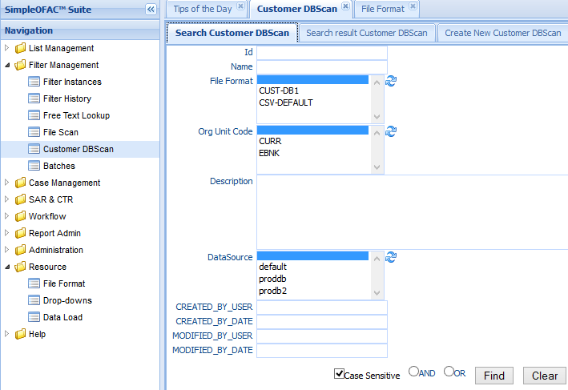
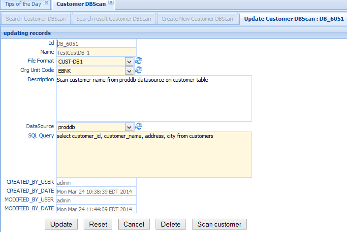
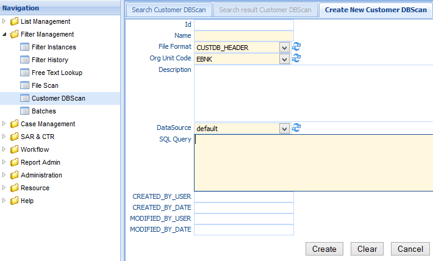

Customer DBScan allows the user to scan customer data in the customer table. The customer table can reside in the same database as SimpleOFAC database or any other database of your choice. If the customer table resides outside the SimpleOFAC database, The datasource of the customer database need to be created during the installation.
Click the Customer DBScan in the left navigation menu under Screening management, a new Customer DBScan Tab folder will be created in the right panel.
There are 3 sub-Tab folders: Search Customer DBScan, Search Result Customer DBScan and Create New Customer DBScan.
Search Criteria
| Field Name | Description |
|---|---|
| Id | unique record identifier |
| Name | Name of this entry |
| File Format | The format of the file; Select a value from the dropdown list. |
| Please see File Format for details. | |
| OrgUnit Code | select a value from the orgunit dropdown list. |
| Description | Description of this entry |
| DataSource | The database where the customer tables reside. |
| CreatedByDate | Date and Time when this entry is created |
| CreatedByUser | User who create this entry. |
| ModifiedByDate | Last modified date and time. |
| ModifiedByUser | Last modified user. |
| AND | Select AND radio box if you want those criteria add together. |
| OR | Select OR radio box if you want to get the result if either criteria meet |
The top part is the table which shows the list of the customer DBScan that meet the search criteria. The bottom part is the details of the selected entry.
Double Click the selected record in the table to modify this entry. A new Tab folder “Update/Delete Customer DBScan” will be added, as show below:
Select the “Create New Customer DBScan” Tab to create a new entry.
| Field Name | Description |
|---|---|
| Id | unique record identifier |
| Name | Name of this entry |
| File Format | The format of the file; Select a value from the dropdown list. This is a mandatory field. Please see File Format for details. |
| OrgUnit Code | The Orgunit the watch list alert will be saved to. select a value from the orgunit dropdown list. This is a mandatory field. |
| Description | Description of this entry |
| DataSourc | The database where the customer tables reside. |
| SQL Query | The sql script to query customer data. |
| CreatedByDate | Date and Time when this entry is created. It is a read only field. |
| CreatedByUser | User who create this this entry. It is a read only field. |
| ModifiedByDate | Last modified date and time; It is a read only field. |
| ModifiedByUser | Last modified user; It is a read only field. |